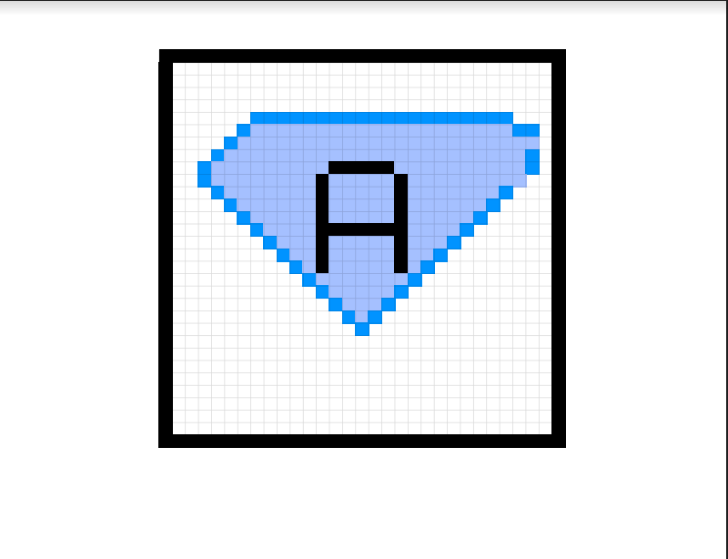

Hi, I am a student currently learning about web development and design.Recently, I learned how to create my own Favicon! A favicon is the little icon image at the beginning of a tab. I was able to add my own favicon to this page by taking a screenshot of the pdf file I orginally made and uploading it to replit. Then, I saved it as a png file and used the css tag known as link rel and inserted it as a icon. Then i used that same text to make it a CSS image link and then used the rel= stylesheet code in order to make it go to the top of my website, In order to create your own favicon, the first thing you need to do is understand binary because in order to create a favicon, you would be using 0s and 1s to code and in some cases, you would also use hexadecimals to make a favicon.Once I understood the foundations of binary, I put together what I learned in order to incorporate colors using binary. In further detail, I used the RGB formula to practice. In order to do this, you first adjust the width and height and the amount of pixels you would like to use in your favicon. After doing this, you would use 0s and 1s in a specific pattern to make color. In order to make this specific favicon, I used google sheets and added color to the squares to make a design and turn it into this cool image!
This is my favicon!
